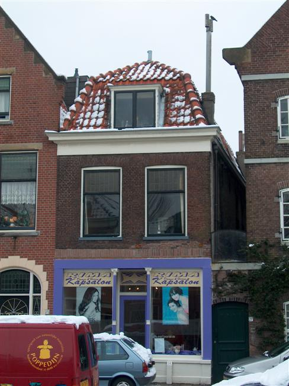

Dit stokoude pand mag zich verheugen in grote naamsbekendheid binnen de gereformeerde academische wereld. Niet in het minst door illustere oudbewoners is de BWS bekend komen te staan als exponent van Delftsche studentikositeit. De weinigen die dat heden ten dage nog kunnen en willen uitdragen weten de weg naar De Kast al jaren te vinden. Zolang de bouwkundige staat mogelijkheden biedt voor menselijke bewoning zal de BWS de VGSD blijven verheffen.
